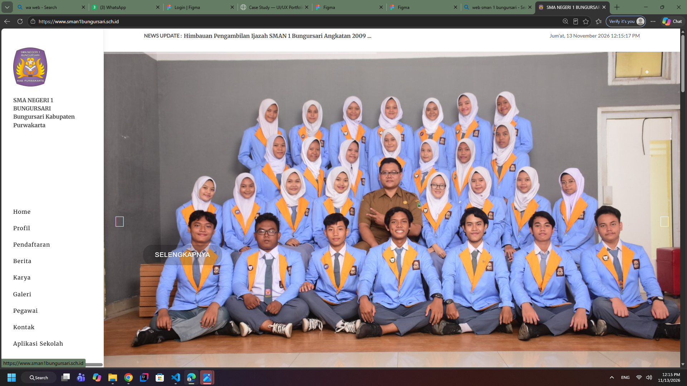
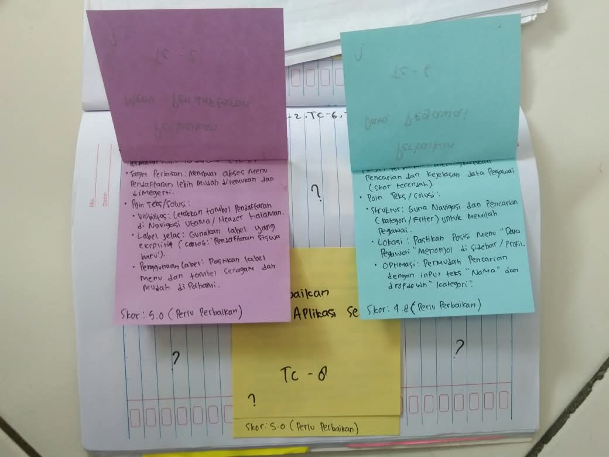
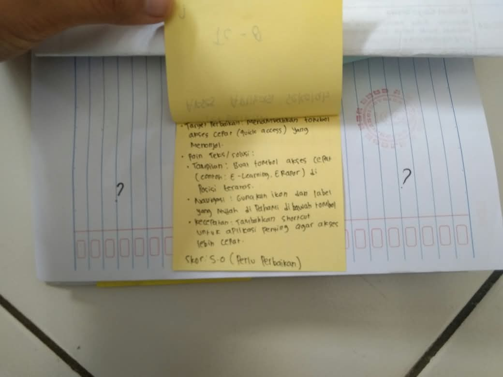
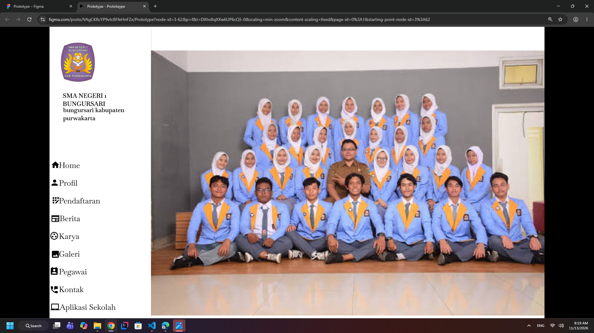

Permasalahan dan Solusi.
Mengobservasi Permasalahan dan Mencari Solusi pada Tampilan Desktop
Overview
Problem
Menu navigasi utama pada sidebar kiri hanya terdiri dari teks tanpa dilengkapi ikon pendukung. Ketiadaan elemen visual ini membuat hierarki navigasi terlihat kurang menarik secara estetika dan kurang intuitif bagi pengguna dalam membedakan fungsi tiap menu secara sekilas.
Tampilan Desktop

As a result...
Solution
Solusi yang diusulkan adalah melengkapi penanda ikon panah pada setiap menu desktop yang memiliki submenu lanjutan. Pada tampilan desktop, ikon panah ditambahkan pada item "Informasi Berkala" untuk menunjukkan adanya submenu di dalamnya. Perbaikan ini bertujuan memperjelas struktur navigasi, membuat interaksi lebih konsisten, dan membantu pengguna menemukan informasi yang dibutuhkan dengan cepat.
Proses Desain.
Proses desain melibatkan pengamatan terhadap permasalahan navigasi desktop dan pencarian solusi yang efektif.
Sticky Notes


Proses Perbaikan
Memperjelas submenu desktop
icon icon ditambahkan di setiap nama halaman agar halaman lebih dikenali
Perubahan struktur navigasi
sebelum dan sesudah perbaikan

Kesimpulan perbaikan.
Perbaikan navigasi ini berhasil membuat struktur Informasi dan Informasi Berkala lebih mudah dipahami pada tampilan desktop.
Hasil Perbaikan
icon icon ditambahkan di setiap nama halaman .
Dampak bagi Pengguna
Pengguna dapat lebih cepat memahami menu mana yang memiliki submenu lanjutan sehingga proses pencarian informasi menjadi lebih jelas dan efisien.